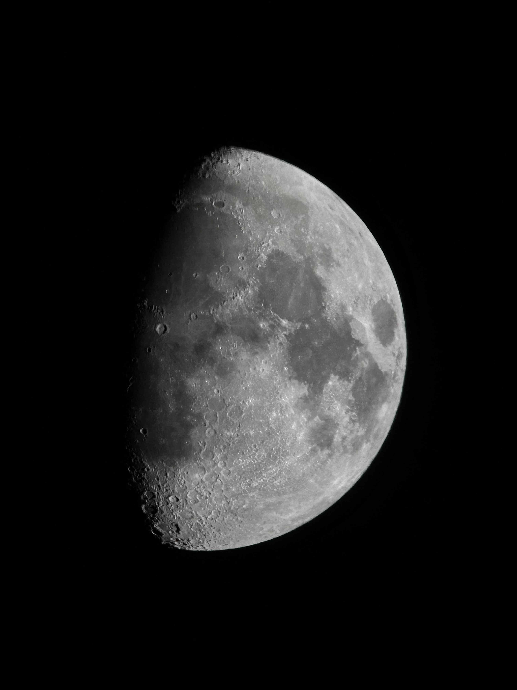
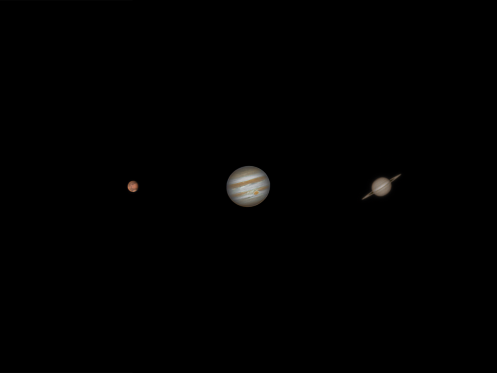
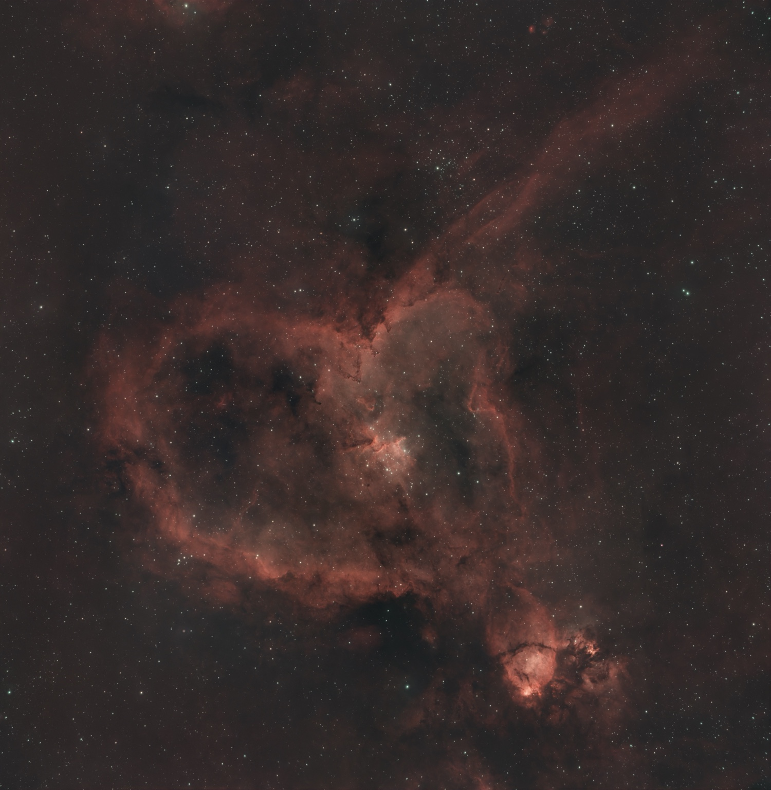
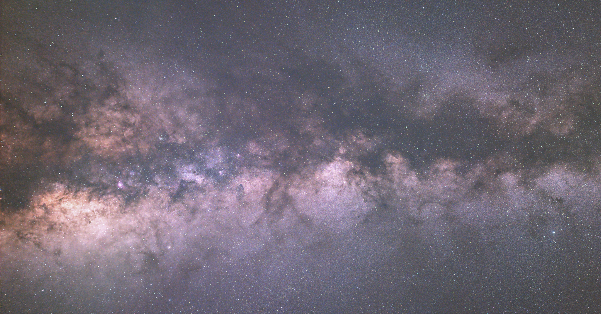

The Moon
The Moon is one of the easiest targets for beginner astrophotographers. Its bright surface allows us to photograph details and craters.

The Moon - Photographed by me.
Astrophotography for Beginners
There are many beautiful objects in the night sky that can be photographed. Some are easy for beginners, while others require more advanced equipment and practice.
The Moon is one of the easiest targets for beginner astrophotographers. Its bright surface allows us to photograph details and craters.

The Moon - Photographed by me.
Planets are another exciting astrophotography target. Jupiter, Saturn, and Mars are popular because they can reveal interesting features through a telescope. However, it requres a much more advanced setup.

Mars, Jupiter, and Saturn - A composite of my own planetary photographs.
Nebulae are large clouds of gas and dust in space. Some are regions where new stars form. One of my favorite targets is the Heart Nebula, which is located in the constellation Cassiopeia.

The Heart Nebula (IC 1805) - Photographed and processed by me.
Galaxies contain billions of stars. Our own Milky Way is a great target for wide-field photography, especially in locations with dark skies and little light pollution.

The Milky Way - Photographed by me.
Visit NASA Science to learn more about celestial objects and explore images from space missions.